Abstract
Offline decision-making via diffusion models often produces trajectories that are misaligned with system dynamics, limiting their reliability for control. We propose Model Predictive Diffuser (MPDiffuser), a compositional diffusion framework that combines a diffusion planner with a dynamics diffusion model to generate task-aligned and dynamically plausible trajectories. MPDiffuser interleaves planner and dynamics updates during sampling, progressively correcting feasibility while preserving task intent. A lightweight ranking module then selects trajectories that best satisfy task objectives. The compositional design improves sample efficiency and adaptability by enabling the dynamics model to leverage diverse and previously unseen data independently of the planner. Empirically, we demonstrate consistent improvements over prior diffusion-based methods on unconstrained (D4RL) and constrained (DSRL) benchmarks, and validate practicality through deployment on a real quadrupedal robot.
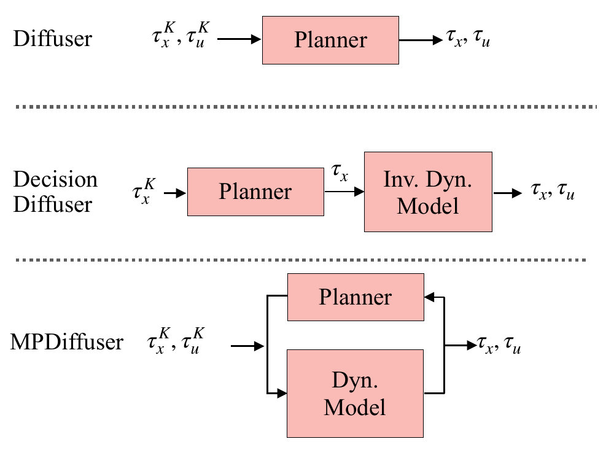
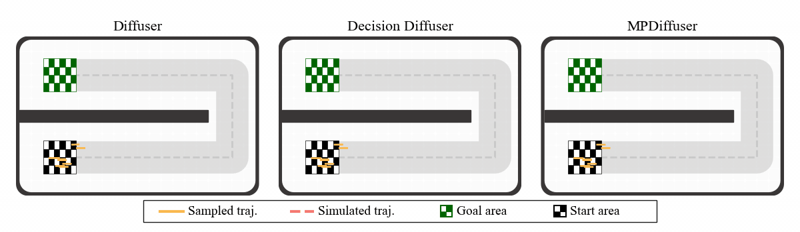
MPDiffuser couples a diffusion planner with a diffusion dynamics model and a lightweight ranker. The planner proposes task-aligned trajectories, the dynamics model repeatedly corrects feasibility during sampling, and the ranker selects trajectories that best satisfy the objective. The car navigation example illustrates the motivation: prior diffusion samplers can produce state sequences or actions that diverge when executed, while MPDiffuser generates trajectories that remain faithful to the system dynamics.
Benchmarks
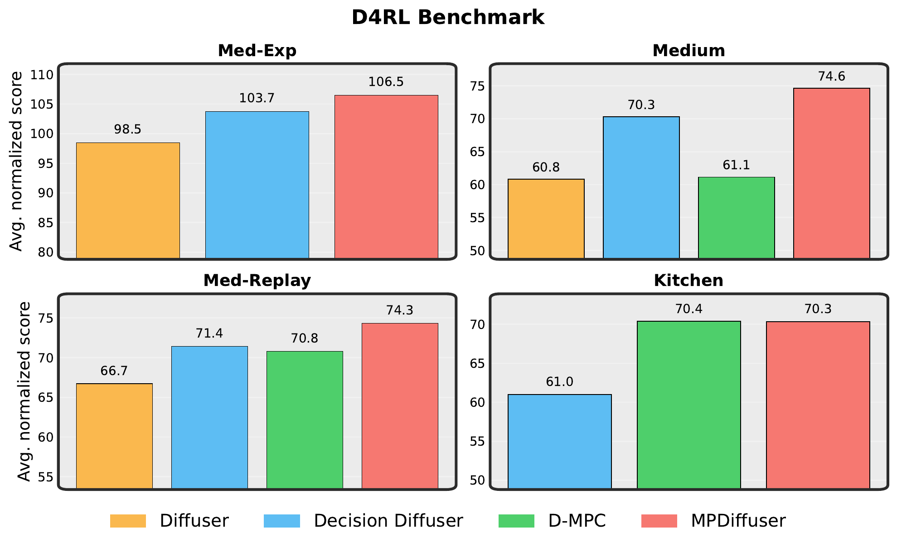
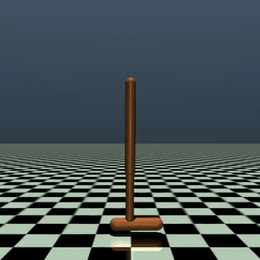
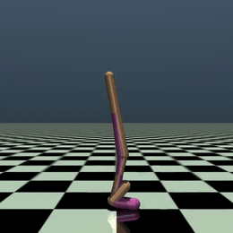
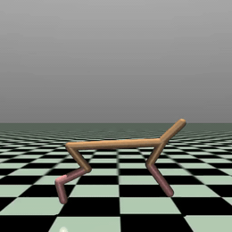
MPDiffuser outperforms prior work on standardized unconstrained decision making benchmarks.
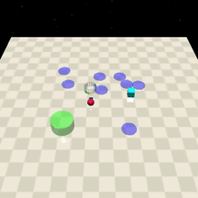
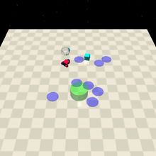
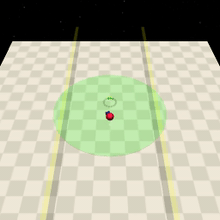
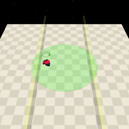
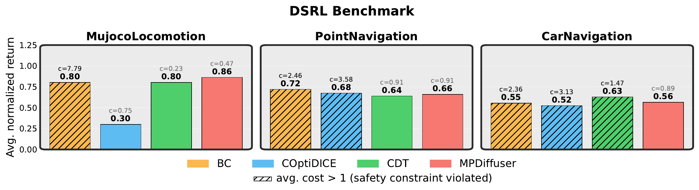
DSRL tests constrained decision making, where trajectories must respect safety budgets while still reaching the task objective.
Framework Features
Adaptation to Novel Dynamics
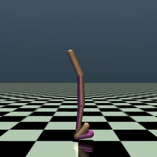
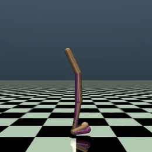
Because MPDiffuser separates task planning from dynamics correction, the system can adapt to a dynamics shift by fine-tuning the dynamics model while preserving the planner's task objective.
Sample Efficiency

MPDiffuser remains sample-efficient even with limited expert data by leveraging additional random trajectories solely for dynamics learning, improving FetchPickAndPlace success rates from 75% to 86% without changing the planner training data.
Real-World Experiment

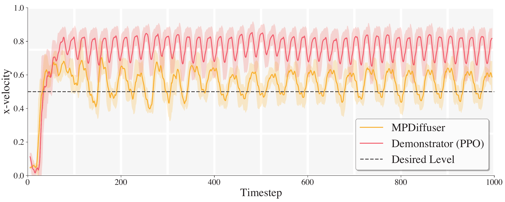
MPDiffuser is deployed on a real quadrupedal robot to test whether diffusion-based predictive control can transfer from offline trajectory generation to physical locomotion. The experiment evaluates closed-loop execution under real dynamics, onboard computation, and the practical timing constraints.
BibTeX
@inproceedings{balim2026modelbased,
title = {Model-Based Diffusion Sampling for Predictive Control in Offline Decision Making},
author = {Balim, Haldun and Li, Na and Du, Yilun},
booktitle = {Proceedings of the International Conference on Machine Learning},
year = {2026}
}